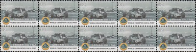

Graham Hill (1962, 1968)
Norman Graham Hill OBE (15th February 1929 - 29th November 1975) won the F1 drivers' championship twice. He is the only driver ever to win the triple crown in Motorsport - the Le Mans 24 Hours, the Indianapolis 500 and the Monaco Grand Prix.
 |
 |
1958 - 1959 : Team Lotus
Hill joined Team Lotus as a mechanic, but soon after talked his way into the cockpit. His interest in racing had been started after paying 5s in response to an advert for laps at Brand Hatch. These first two seaons were non-eventful, with many retirements and no points scored.
1960 - 1966 : Owen Racing Organisation
Hill moved to BRM in 1960, after a couple of lackluster seasons he won his title in 1962. This was followed by three seasons of being runner up.
 |
|
1967 - 1969 : Team Lotus
In 1967 Hill returned to Lotus to help develop the Lotus 49 with the new Cosworth V8 engine. Hill won his second title in 1968 having become team leader following the deaths of Jim Clark and Mike Spence. The Lotus had a reputation for being very fragile and dangerous - in 1969 Hill broke both of his legs in a crash at the US Grand Prix ending a disappointing season.
 |
 |
|  |  |
1970 : Rob Walker Racing Team
Colin Chapman placed Hill in Rob Walker's team in 1970 believing him to be a spent force, the deal was sweetened with one of the brand-new Lotus 72 cars. This was another poor season due to the fact that the car was not fully developed and so failed on many occasions.
1971 - 1972 : Motor Racing Developments
Hill moved to Brabham in 1971, but did not settle there as the team was in a state of flux after the retirement of Jack Brabham and the sale to Bernie Ecclestone. Despite this he was runner up in 1971 and fourth in 1972.
1973 : Embassy Racing
To maintain a presence in F1, Hill set up his own team in 1973 using a chassis from Shadow. He scored no points in this season.
1974 - 1975 : Embassy Racing with Graham Hill
For 1974, Hill used a chassis from Lola and this was evolved into his own design in 1975. But was unable to achieve any great success. Hill died on 29th November 1975 at the controls of his light aircraft when it crashed on the approach to Elstree Airfield. Five members of his also died in the accident.